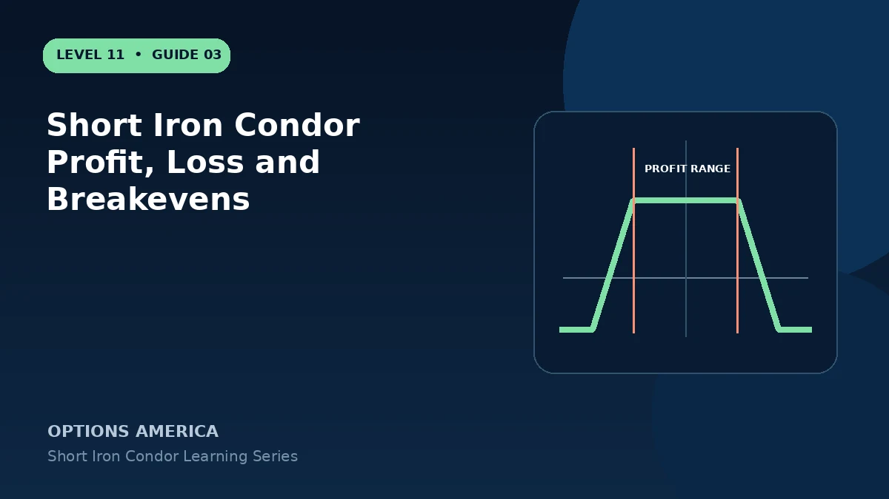

Calculate maximum profit, maximum loss and both expiration breakevens from the strikes, wing widths and net credit.
Maximum profit
The opening net credit is retained when all four options expire worthless, which requires the underlying to finish between the short put and short call. Subtract commissions and fees from the real result.
Maximum loss
For equal-width wings, subtract the credit from the strike width. If widths differ, calculate each side independently; the wider side can produce the larger loss and may determine buying power.
Lower breakeven
Subtract the credit per share from the short-put strike. Below that level at expiration, losses increase until the long put caps the put-side loss.
Upper breakeven
Add the credit per share to the short-call strike. Above it, losses increase until the long call caps the call-side loss.
A practical example
A 90/95/105/110 condor receives $1.50. Breakevens are $93.50 and $106.50; maximum profit is $150 and maximum loss is $350 per spread.
This simplified example focuses on one position and a limited set of price and volatility outcomes. Live option prices also reflect the underlying price, time decay, rates, dividends, liquidity and transaction costs. Greeks are theoretical estimates, not guarantees.
Frequently asked questions
Can both sides lose at expiration?
Only one side can be breached by one final underlying price.
Do unequal wings change the formula?
Yes. Calculate call-side and put-side loss separately.
Is the credit guaranteed profit?
No. It is only maximum profit if the price finishes inside the short strikes.
Continue the Short Iron Condor cluster
Explore related guides: Short Iron Condor Example With Full Payoff Scenarios · Short Iron Condor vs Short Strangle · How to Adjust a Short Iron Condor. For a structured sequence, use the free Level 11 – Short Iron Condor course.
Options involve risk and are not suitable for every investor. This material is educational and is not investment, tax or legal advice. Greeks are theoretical estimates, and contract terms and broker requirements can vary.